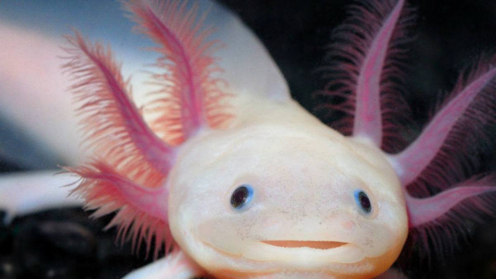

Ambystoma Mexicanum
Ambystoma Mexicanum
- Nombre Ajolote
- Ecosistema Acuatico
- Longevidad 10-15 años
- Ecozona Neotropico
El ajolote o axolote mexicano (Ambystoma mexicanum) es una especie de anfibio del orden de los caudados (Salamandras), familia de las "salamandras topo" y del género Ambystoma que está distribuido en México.
Es uno de los animales más raros del mundo y se encuentra en peligro crítico de extinción. Tiene la apariencia de un renacuajo, pero esto es debida a una condición que presenta esta salamandra llamada neotenia, eso quiere decir que este animal conserva su aleta dorsal de renacuajo aún en estado adulto.
Además de su curiosa apariencia, el ajolote contiene en sí algo muy inusual y eso es su capacidad de regenerar un miembro perdido. Es por eso, que quizás el ajolote sea una de las salamandras mas estudiadas del mundo. En un sentido es negativo, pues es una de las razones del porque se encuentra en peligro de extinción, gracias a la explotación de esta para usos medicinales.
